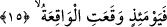
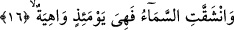
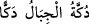

edilmesi gerekir. Böyle bir ihtimal, -âyette ifâde edilenin aksine- dağların ve
yeryüzünün birbirine bir kez değil bir çok kez çarpacağı izlenimini verir. Bu âyetin bir
benzeri, “İnkâr edenler göklerle yer bitişik bir hâlde iken bizim onları birbirinden
kopardığımızı... görmediler mi?” (el-Enbiya, 21/30) âyetidir ki, burada da fiil tesniye
olarak “kânetâ” şeklinde gelmiş, ama çoğul olarak “kunne” şeklinde getirilmemiştir.
Âyette yer alan ve çarpma anlamına gelen “dekk” masdarı, “dakk” masdarından daha
güçlü bir anlam ifâde eder. es-Sıhah’ta ifâde edildiğine göre dekk, dakk demektir.
Arapçada birisi bir şeye vurup onu kırdığında durum bu fiille ifâde edilirken “dekkehu”
denilir ki anlamı “o kişi o şeyi kırdı ve yerle bir etti” demek olur.
Müfredat’ta ifâde olunduğuna göre “dekk”, toprağı yumuşak yeryüzü parçası demektir.
Arapçada “/dukketil cibâlu dekken” denildiğinde “dağlar, toprağı yumuşak
yeryüzü hâline getirildi” anlamı kasdedilmiş olur.
15. İşte o gün olan olur.
“İşte o gün” yâni o esnâda “olan olur.” Âyette yer alan “el-Vâkıa” kıyâmetin
isimlerinden birisidir. Kıyâmete bu ismin verilmesi kopacağının kesin olmasından
dolayıdır. İşte bu itibarla kıyâmeti ifâde eden “vâkıa” kelimesine “vakaat” yâni “vukû
buldu” fiili isnâd edilmiştir. Âyet-i kerîmenin anlam; “mâdem ki durum bundan ibârettir;
size vaad edilen kıyâmet kopmuş ve kıyâmet çığlığı olan o büyük musîbet başınıza o gün
gelmiştir” demektir. Bu ifâde, yukarıda geçen “sura üfürüldüğü zaman...” âyetinin
cevabıdır. “Yevmeizin” kelimesi “izâ” kelimesinden bedel olup tekrar edilmesi kelamın
uzun olmasından dolayıdır. Her ikisinin âmili ise “vakaat” fiilidir.
16. Gök de yarılır ve artık o gün o, zayıftır.
“Gök de yarılır” yâni Allah’ın murâd ettiği büyük iş için meleklerin inmesi
dolayısıyla gökyüzü yarılır. Nitekim bu gerçek bir başka âyet-i kerîmede şu ifâdelerle
dile getirilir: “O gün gökyüzü beyaz bulutlar ile yarılacak ve melekler bölük bölük
indirileceklerdir” (el-Furkan, 25/25) Biz yukarıda “gökyüzü meleklerin inmesi için
yarılacak” demiştik. Ancak, gökyüzünün yarılması o günün şiddeti sebebiyle de olabilir.
Bu ifâde, yukarda geçen “vakaat” fiiline mâtuftur.
“Ve artık o gün o” gök “zayıftır.” Yırtılmaya, kaynaşmaya müsâid olmakla birlikte,
sıkı ve sağlam iken şimdi -çözülmüş ip gibi- zayıftır, sarkıktır, kuvveti düşüktür. Âyette